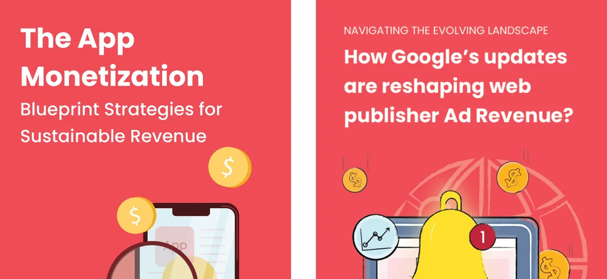

Turn attention into booked demos.
Traffic is not pipeline. We build the system that carries a reader from the first click to a sales call: a clean HubSpot, emails that react to what buyers do, webinars worth an hour and reports that trace every demo to its source.
- Free SEO, AEO and GEO audit
- Written plan with the price in 24 hours
- Senior people lead every account
On the wall: webinars, films and guides from the team's years at AdPushup.
Most SaaS teams don't have a traffic problem. They have a follow-up problem. The reader was interested. Nobody wrote back in time.
Every step between a click and a call.
Tracking, email, webinars and sales material are built as one system, so no reader goes quiet without a reason.
HubSpot and CRM
A clean CRM with clear lifecycle stages and every lead source tagged, so the reports can be trusted.
Email workflows
Demo, trial and re-engagement journeys that react to what a buyer does, not to a calendar.
Newsletters and gated content
Guides and reports worth an email address, and a newsletter people open.
Webinars, video and podcasts
Programmes with guests your buyers respect, built so sales can reuse every session.
Account-based marketing
Named accounts, the people who matter inside them and a plan to reach each one.
Sales enablement
Case studies, decks and one-pagers that answer the questions sales hears every week.
Funnel reporting
First touch to closed won in one report, so you know which work brings revenue.
From first click to booked demo.
One reader, followed all the way through. Every step is built, tracked and handed to sales with context.
A guide worth saving
A buyer finds a guide that answers a real question, and leaves an email to keep it.
A follow up that fits
The next emails match what they read. A pricing reader gets a customer story, not a newsletter.
A webinar that earns an hour
A session with a guest they already respect moves them from curious to serious.
A demo, with context
Sales gets a name, what they read and what they asked. The first call starts in the right place.

The next email matches what they just read.
Demo booked. Sales knows who, why and what they read.
Programmes the team has already run.
From the team's years at AdPushup. All of it is still public.
A rhythm you can plan around.
How we start, and what you hear from us once the work is running.
- Baseline reportWhat your CRM, emails and funnel look like today, and where readers go quiet.
- Weekly progress updateWhat went live, what was sent and what it did.
- Review call every two weeksDecisions made with the people doing the work.
- Monthly full reportLeads, demos and pipeline, by source.
What you get with lifecycle.
Your plan picks what matters for your goal. This is what the work includes.
Book a call- A CRM clean-up with lifecycle stages and source tracking
- Nurture workflows for demos, trials and quiet leads
- A newsletter and a calendar of gated guides
- Webinars planned, hosted and followed up
- A named account list with a plan for each account
- The sales material your team keeps asking for
- One monthly report from first touch to closed won
Stronger with the rest of the team.
Follow-up needs something to follow. Search, press and events fill the top of the same system.

Questions about lifecycle and demand.
Do you only work in HubSpot?
HubSpot is where we work most. If you run another CRM or email tool, we look at it in the audit and tell you plainly whether to keep it or move.
We already get leads. Why do we need this?
Because most leads are not ready on day one. Lifecycle work keeps the right ones warm and tells sales the moment they show intent.
Who writes the emails and guides?
We do: strategy, copy, design and build. Your team reviews everything before it goes out.
Can you run webinars from start to finish?
Yes. Topic, guests, promotion, hosting support, recording and follow up, plus clips and a recap sales can send.
How do you report results?
By source, from first touch to closed won. You get a baseline report, a weekly update, a review call every two weeks and a monthly full report.
What does it cost?
We don't publish a price list, because the work depends on the plan. After a free call and audit, you get a written plan with the price within 24 hours, as a monthly partnership or a fixed project.
Can lifecycle run without the other services?
Yes. Lifecycle can run on its own if you already have traffic. It works harder beside search, brand and events, because they bring the readers it follows up. You can see how all four fit together on our B2B SaaS marketing page.
Stop losing readers you already won.
Book a 30-minute call. We look at your funnel from first click to closed won, then send a written plan with the price within 24 hours.